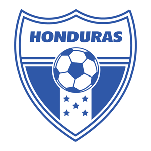

por Pedro Henrique B. N. Prado

Em tempos de crise política no país, o povo de Honduras foi às ruas para comemorar a classificação para a Copa do Mundo de 2010, na África do Sul. A festa foi tanta que o dia 15 de outubro foi declarado feriado nacional. Mas os torcedores hondurenhos, que não veem sua seleção em um Mundial desde 1982, sabem que não devem esperar muito do time no ano que vem.
Nas eliminatórias, conseguiram boa campanha, com 10 vitórias, dois empates e seis derrotas. A equipe do técnico Reinaldo Rueda é rápida e aposta nas subidas ao ataque para surpreender na África do Sul.
Os dois atacantes são os principais nomes do time, praticamente desconhecido. David Suazo, do Internazionale de Milão, é o astro da seleção. Ao seu lado está o veterano Carlos Pavón, maior artilheiro da história de Honduras, com 56 gols, sendo um deles o da vitória sobre El Salvador, que deu a classificação ao país.